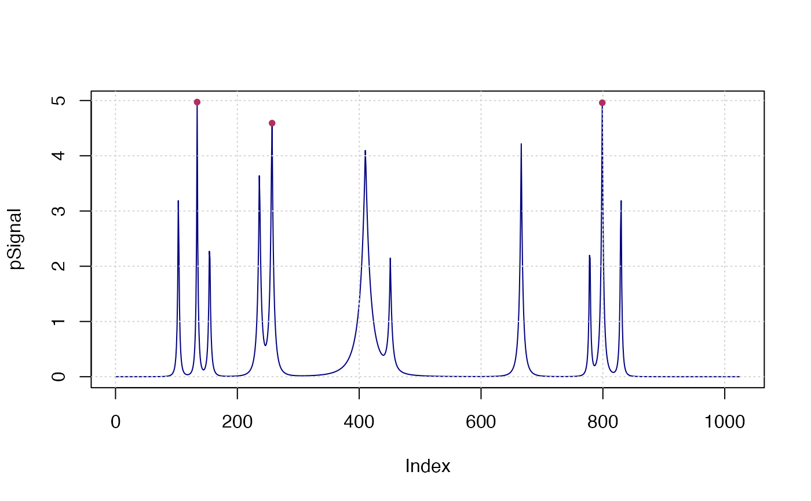

Find peaks (maxima) in a time series. This function is modified from
pracma::findpeaks.
findpeaks(
x,
nups = 1,
ndowns = nups,
zero = "0",
peakpat = NULL,
minpeakheight = -Inf,
minpeakdistance = 1,
h_min = 0,
h_max = 0,
npeaks = 0,
sortstr = FALSE,
include_gregexpr = FALSE,
IsPlot = F
)Numeric vector.
minimum number of increasing steps before a peak is reached
minimum number of decreasing steps after the peak
can be +, -, or 0; how to interprete succeeding steps
of the same value: increasing, decreasing, or special
define a peak as a regular pattern, such as the default
pattern [+]{1,}[-]{1,}; if a pattern is provided, the parameters
nups and ndowns are not taken into account
The minimum (absolute) height a peak has to have to be recognized as such
The minimum distance (in indices) peaks have to have
to be counted. If the distance of two maximum extreme value less than
minpeakdistance, only the real maximum value will be left.
h is defined as the difference of peak value to the
adjacent left and right trough value (h_left and h_right respectively).
The real peaks should follow min(h_left, h_right) >= h_min.
Similar as h_min, the real peaks should follow
max(h_left, h_right) >= h_min.
the number of peaks to return. If sortstr = true, the
largest npeaks maximum values will be returned; If sortstr = false,
just the first npeaks are returned in the order of index.
Boolean, Should the peaks be returned sorted in decreasing oreder of their maximum value?
Boolean (default FALSE), whether to include the
matched gregexpr?
Boolean, whether to plot?
In versions before v0.3.4, findpeaks(c(1, 2, 3, 4, 4, 3, 1)) failed to detect
peaks when a flat pattern exit in the middle.
From version v0.3.4, the peak pattern was changed from [+]{%d,}[-]{%d,} to
[+]{%d,}[0]{0,}[-]{%d,}. The latter can escape the flat part successfully.
x <- seq(0, 1, len = 1024)
pos <- c(0.1, 0.13, 0.15, 0.23, 0.25, 0.40, 0.44, 0.65, 0.76, 0.78, 0.81)
hgt <- c(4, 5, 3, 4, 5, 4.2, 2.1, 4.3, 3.1, 5.1, 4.2)
wdt <- c(0.005, 0.005, 0.006, 0.01, 0.01, 0.03, 0.01, 0.01, 0.005, 0.008, 0.005)
pSignal <- numeric(length(x))
for (i in seq(along=pos)) {
pSignal <- pSignal + hgt[i]/(1 + abs((x - pos[i])/wdt[i]))^4
}
plot(pSignal, type="l", col="navy"); grid()
x <- findpeaks(pSignal, npeaks=3, h_min=4, sortstr=TRUE)
points(val~pos, x$X, pch=20, col="maroon")
